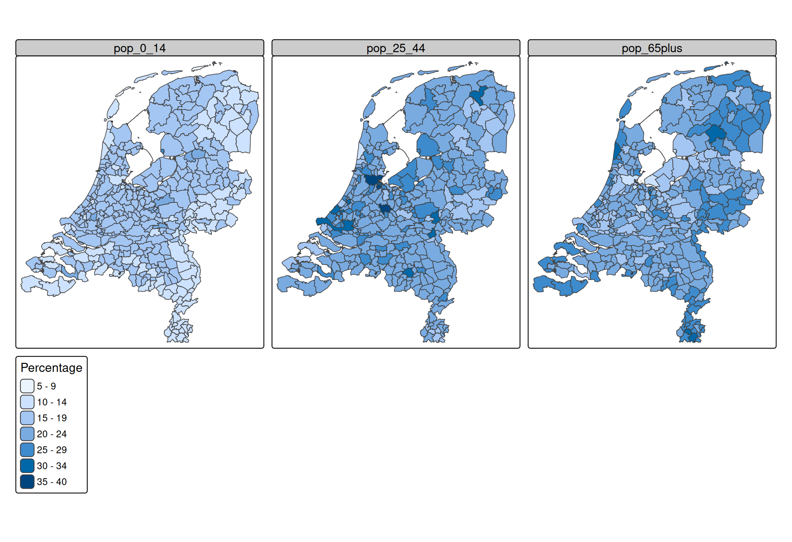
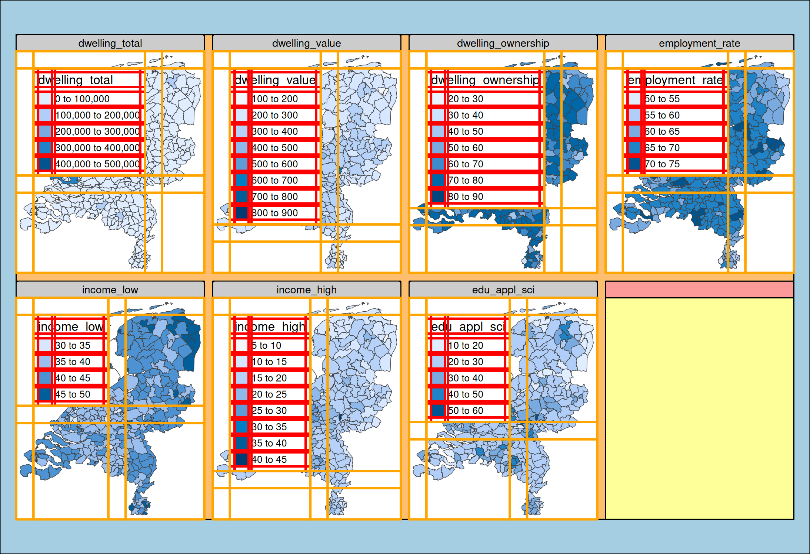
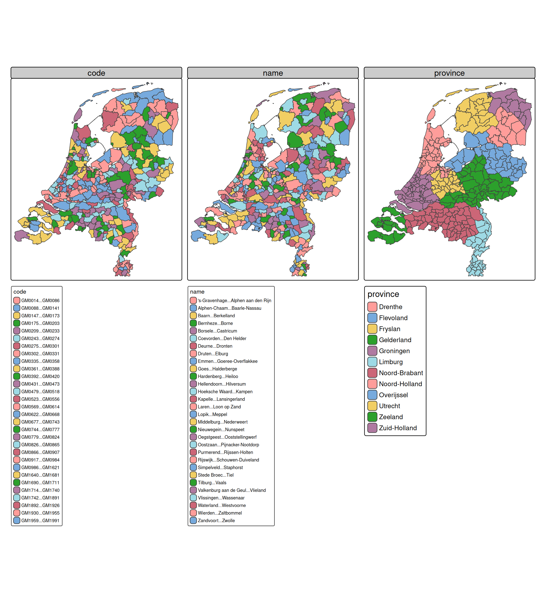
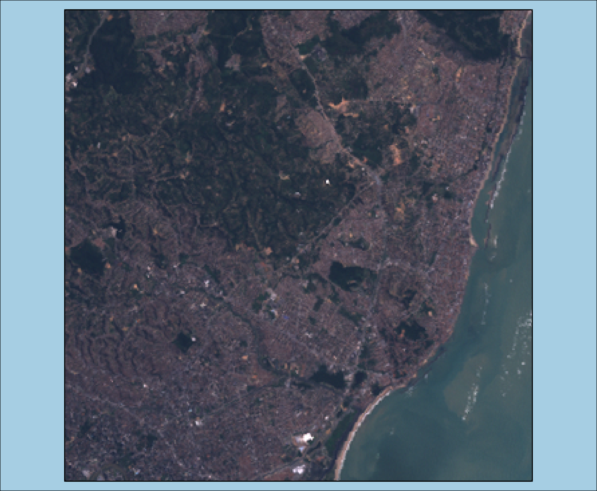
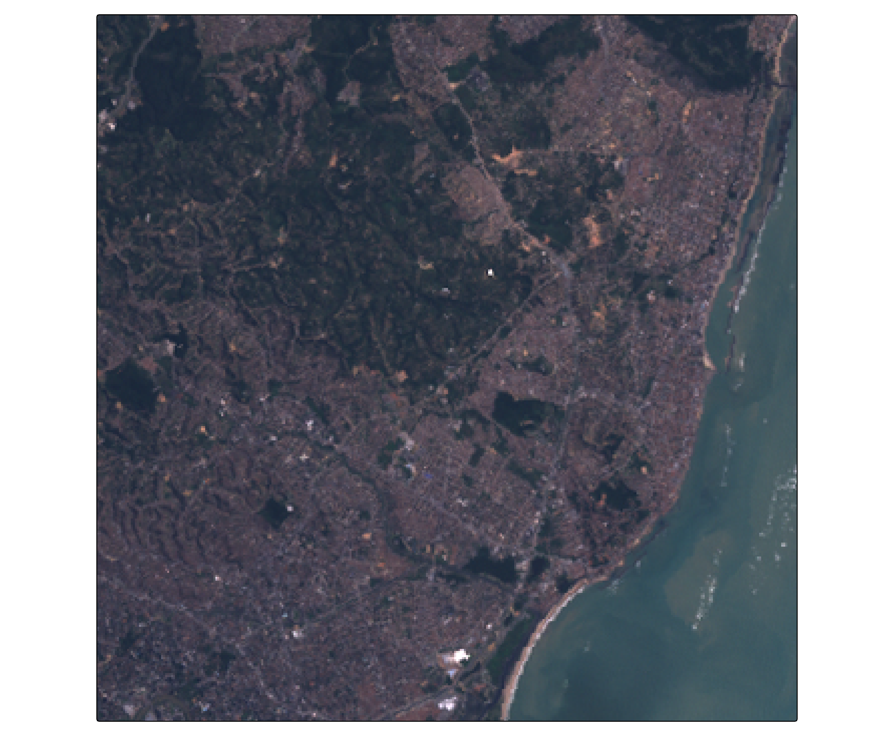
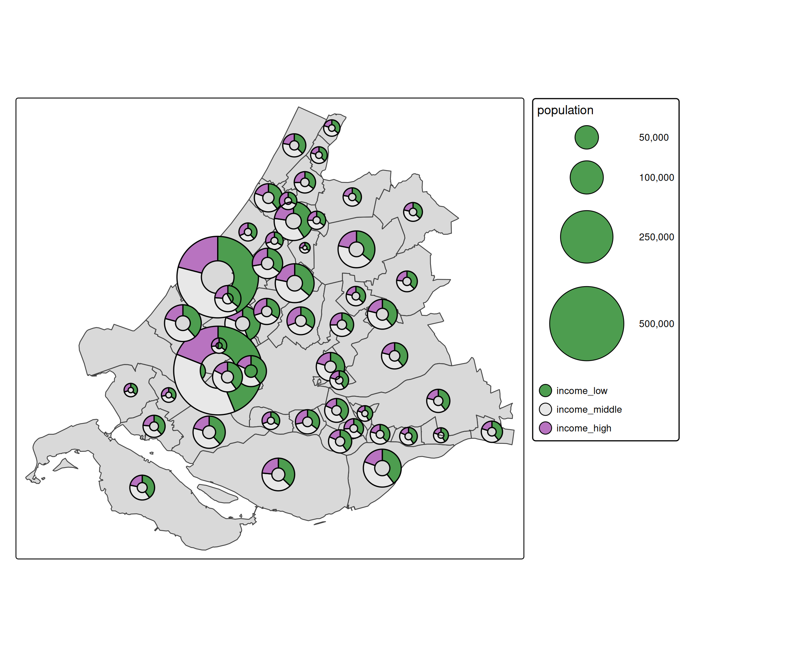

tmap advanced: multiple visual variables
Source:vignettes/adv_multivariate.Rmd
adv_multivariate.RmdMultiple visual variables
Usually we specify a data-driven visual variable with one data variable (see vignette about visual variables). However, in several use cases, it is useful to use a few data variables for one visual variables.
There are two ways to use multiple data variables for one visual variable: for creating facets, and for multivariate mapping.
Creating facets
Recall from the vigentte about facets
tm_shape(NLD_muni) +
tm_polygons(
fill = c("pop_0_14", "pop_25_44", "pop_65plus"),
fill.legend = tm_legend("Percentage"),
fill.free = FALSE)
A facet is create for each specified data variable. More options to select variables are available via the underlying function tm_vars(). For instance, variables 12 to 18 (so columns 12 to 18, disregarding the geometry column)
tm_shape(NLD_muni) +
tm_polygons(
fill = tm_vars(12:18))
Or the first 3 variables:
tm_shape(NLD_muni, fig.height = 8) +
tm_polygons(
fill = tm_vars(n = 3))
#> Warning: Number of levels of the variable assigned to the aesthetic "fill" of
#> the layer "polygons" is 345, which is larger than n.max (which is 30), so
#> levels are combined.
#> Warning: Number of levels of the variable assigned to the aesthetic "fill" of
#> the layer "polygons" is 345, which is larger than n.max (which is 30), so
#> levels are combined.
#> [plot mode] fit legend/component: Some legend items or map compoments do not
#> fit well, and are therefore rescaled.
#> ℹ Set the tmap option `component.autoscale = FALSE` to disable rescaling.
- For creating facets. This is the standard way.
- For multivariate mapping.
These cases can be divived into two g Before going through these cases, there is one important There are two
Multivariate mapping
There are (at least) two use cases:
RGB image
library(stars)
#> Loading required package: abind
#> Loading required package: sf
#> Linking to GEOS 3.12.1, GDAL 3.8.4, PROJ 9.4.0; sf_use_s2() is TRUE
tif = system.file("tif/L7_ETMs.tif", package = "stars")
(L7 = read_stars(tif))
#> stars object with 3 dimensions and 1 attribute
#> attribute(s):
#> Min. 1st Qu. Median Mean 3rd Qu. Max.
#> L7_ETMs.tif 1 54 69 68.91242 86 255
#> dimension(s):
#> from to offset delta refsys point x/y
#> x 1 349 288776 28.5 SIRGAS 2000 / UTM zone 25S FALSE [x]
#> y 1 352 9120761 -28.5 SIRGAS 2000 / UTM zone 25S FALSE [y]
#> band 1 6 NA NA NA NANote that the channels are included in the dimenison "band". We can use the argument dimvalues to select them:

Alternatively, we can split the stars object:
(L7split = split(L7))
#> stars object with 2 dimensions and 6 attributes
#> attribute(s):
#> Min. 1st Qu. Median Mean 3rd Qu. Max.
#> X1 47 67 78 79.14772 89 255
#> X2 32 55 66 67.57465 79 255
#> X3 21 49 63 64.35886 77 255
#> X4 9 52 63 59.23541 75 255
#> X5 1 63 89 83.18266 112 255
#> X6 1 32 60 59.97521 88 255
#> dimension(s):
#> from to offset delta refsys point x/y
#> x 1 349 288776 28.5 SIRGAS 2000 / UTM zone 25S FALSE [x]
#> y 1 352 9120761 -28.5 SIRGAS 2000 / UTM zone 25S FALSE [y]and plot it like this:

Glyphs
Glyph are small charts plotted as symbols. See the [extention package tmap.glyphs.
library(tmap.glyphs)
ZH_muni = NLD_muni[NLD_muni$province == "Zuid-Holland", ]
ZH_muni$income_middle = 100 - ZH_muni$income_high - ZH_muni$income_low
tm_shape(ZH_muni) +
tm_polygons() +
tm_donuts(
parts = tm_vars(c("income_low", "income_middle", "income_high"), multivariate = TRUE),
fill.scale = tm_scale_categorical(values = "-pu_gn_div"),
size = "population",
size.scale = tm_scale_continuous(ticks = c(50000, 100000, 250000, 500000))) 
The visual variable parts (introduced in tmap.glyphs) is specified as multivariate visual variable. It specifies the parts (slices) of the donut charts and uses this also for the fill color.